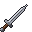
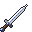
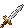

Rarity
The seven rarities from Common to God's Tool - colours, sockets, affixes, how much stronger each step is, and the drop odds by monster level.
The seven rarities
Every piece of gear has one of seven rarities. Rarity sets the name colour, how many sockets the piece can hold, how many affixes it rolls with, and how strong its base numbers are.
| # | Rarity | Colour | Max sockets |
|---|---|---|---|
| 1 | Common | white | 1 |
| 2 | Uncommon | light blue | 2 |
| 3 | Rare | blue | 3 |
| 4 | Mythic | purple | 4 |
| 5 | Legendary | orange | 5 |
| 6 | Extraordinary | red | 6 |
| 7 | God's Tool | gold | 7 |



The same weapon base as Common, Uncommon and Rare. Mythic and higher use the Rare look with an enchanted glint.
Dropped items show a beam in their rarity's colour, so you can spot good loot from a distance.
Unique and Set are types, not rarities
Hand-made items, such as set pieces, Legendary weapons and other named uniques, keep their own fixed rarity. A set can be Rare, Mythic or Legendary. A unique can be anything from Uncommon to God's Tool. Their rarity cannot be changed.
Sockets and affixes
Affixes are stat bonuses ("+3 Might") that sit in sockets. A filled socket shows ◆ and an open one shows ◇. A piece can never hold more sockets than its rarity allows.
What a rolled drop comes with:
| Rarity | Sockets | Affixes |
|---|---|---|
| Common | 0-1 | 0 |
| Uncommon | 1-2 | 1-2 |
| Rare | 2-3 | 2-3 |
| Mythic | 3-4 | 3 |
| Legendary | 4-5 | 3-4 |
| Extraordinary | 5-6 | 4-5 (plus a skill socket) |
| God's Tool | 6-7 | 5-6 (plus a skill socket) |
- Common and Uncommon pieces roll affixes from their own pool: weapon affixes on weapons, armour affixes on armour.
- Rare and up can roll any combat stat on any piece.
- Weapons never roll Vitality. Shields, armour and amulets can.
- Affixes lean toward the class a piece was made for. A stat the class likes tends to roll high, and a stat it doesn't like tends to roll low. Nothing is ruled out.
- Affix ranges grow with item level: both ends go up by 1 for every 10 item levels. Mythic and higher add +1 more to the top of the range for each step above Rare.
| Affix word | Stat | Range at item level 1 | Rolls on |
|---|---|---|---|
| Heavy | Might | 1-3 | weapons |
| Quick | Ferocity | 1-4 | weapons |
| Keen | Precision | 2-6 | weapons |
| Sturdy | Fortitude | 1-3 | armour |
| Plated | Toughness | 1-3 | armour |
| Fleet | Swiftness | 1-3 | armour |
| Rooted | Steadfast | 1-4 | armour |
| Hardy | Vitality | 1-4 | anything but weapons |
| Lucky | Fortune | 1-3 | anything |
| Mystic | Arcana | 1-3 | anything |
The extra base line (Rare and up)
Rare and better rolled pieces may carry one base line they normally wouldn't have. A weapon can get armour or toughness, and armour or a shield can get attack damage or attack speed. The chance grows with rarity:
| Rare | Mythic | Legendary | Extraordinary | God's Tool |
|---|---|---|---|---|
| 25% | 40% | 55% | 70% | 85% |
How much stronger is each step?
A piece's base numbers come from its power, which is its item level plus its rarity number (Common 1 up to God's Tool 7). On top of that, each rarity rolls inside its own quality window:
| Rarity | Quality |
|---|---|
| Common | 85-100% |
| Uncommon | 90-105% |
| Rare | 95-110% |
| Mythic | 100-115% |
| Legendary | 105-120% |
| Extraordinary | 110-125% |
| God's Tool | 115-130% |
So a higher rarity is better at every level, but item level still matters most. A fresh Common at your level can beat an old Legendary from twenty levels ago. Worked examples are on the weapons page.
Names
| Rarity | Name shape | Example |
|---|---|---|
| Common | the base name | Levy Blade |
| Uncommon | affix word + base name | Heavy Levy Blade |
| Rare | two random words (the base name moves to the second line) | Velvet Debt |
| Mythic and up | the Rare name + an epithet | Velvet Debt, the Last Favour |
The random words fit the item and its class. Staves get mage-like names, daggers get rogue-like ones, and so on.
Drop odds by monster level
Every monster gear drop rolls one row of this table, by the monster's level. The odds change every 5 levels: levels 1-4 use the level 1 row, 5-9 the level 5 row, and so on. Figures are % per gear drop.
| Monster level | Common | Uncommon | Rare | Mythic | Legendary | Extraordinary | God's Tool | nothing |
|---|---|---|---|---|---|---|---|---|
| 1 | 40 | 15 | 7 | 3 | 2 | 1 | 0.5 | 31.5 |
| 5 | 35 | 20 | 8 | 3 | 2 | 1 | 0.7 | 30.3 |
| 10 | 31.25 | 21.25 | 9 | 4 | 2.75 | 1.5 | 0.77 | 29.5 |
| 15 | 27.5 | 22.5 | 10 | 5 | 3.5 | 2 | 0.85 | 28.7 |
| 20 | 23.75 | 23.75 | 11 | 6 | 4.25 | 2.5 | 0.92 | 27.8 |
| 25 | 20 | 25 | 12 | 7 | 5 | 3 | 1 | 27 |
| 30 | 18 | 25 | 13 | 7.8 | 5.6 | 3.4 | 1.1 | 26.1 |
| 35 | 16 | 25 | 14 | 8.6 | 6.2 | 3.8 | 1.2 | 25.2 |
| 40 | 14 | 25 | 15 | 9.4 | 6.8 | 4.2 | 1.3 | 24.3 |
| 45 | 12 | 25 | 16 | 10.2 | 7.4 | 4.6 | 1.4 | 23.4 |
| 50 | 10 | 25 | 17 | 11 | 8 | 5 | 1.5 | 22.5 |
- Tougher monsters read further down the table: Magic monsters as if 3 levels higher, Rare +6, Champions +10 and bosses +15. Bosses never roll "nothing".
- The God's Tool column gives you one of the God's Tool weapons made for your class (see relics). The other columns give a rolled piece of that rarity.
- Before any of this, the monster has to drop gear at all. See the drop chances on the gear page.
Raising rarity yourself
- Orbs: an Orb of Transmutation turns a Common into an Uncommon, and a Regal Orb turns an Uncommon into a Rare.
- The forge: pieces come out at your Blacksmithing mastery's rarity, up to Legendary. A Star Shard pushes a piece one rarity higher.
- Extraordinary and God's Tool can't be crafted. They only drop.